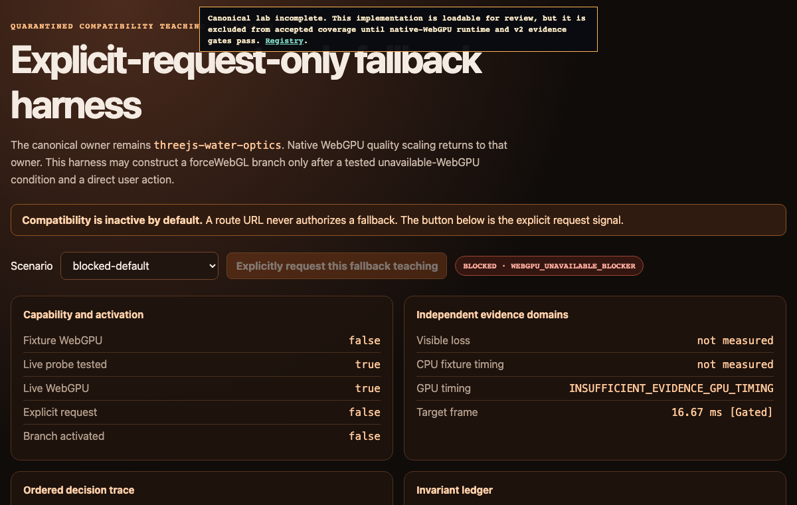

Primary implementation surface
These routes are generated from canonical source. Their exact status remains separate from implementation availability.

Use only for teaching how to apply fallback when WebGPU is unavailable after the user explicitly requests it. Never activate for canonical WebGPU/TSL work, low-end tuning, mobile optimization, capability preflight, or general target support.
These routes are generated from canonical source. Their exact status remains separate from implementation availability.
Fallback planning is explicit tier design, not silent degradation. Capability detection partitions devices into tiers, and each tier gets an authored (not merely reduced) target:
$$\text{tier} = f(\text{WebGPU}, \text{limits}, \text{bandwidth}) \in \{T_0, T_1, T_2\}$$Cost scaling estimates how a pass responds to resolution and step count — raymarch cost scales as $O(N_{px}\cdot S)$, so half resolution plus half steps is a $4\times$ reduction that must be re-validated visually, never assumed. The skill's rule: a fallback is a smaller authored scene with its own validation contract, and tier switching is a hard gate (fail loudly), never a silent downgrade mid-session.
Every image identifies what it proves. Page screenshots demonstrate the published presentation only; generated inputs demonstrate asset channels only; canonical acceptance still requires render-target readback and a schema-v2 bundle.
1 published imageThe complete SKILL.md as loaded by agents — verbatim, rendered.
This skill is a quarantine boundary, not a general compatibility layer. Load it only when the current user explicitly requests teaching how to apply fallback when WebGPU is unavailable. A detected missing backend, low-end or mobile target, performance pressure, broad browser support request, or agent preference does not activate it.
Before reading or applying any fallback recipe, record:
explicit user request for teaching how to apply fallback when WebGPU is
unavailable
canonical owner skill and feature
tested WebGPU-unavailable condition
accepted scope of visual loss and maintenance
If the explicit request is absent, stop at the canonical owner's capability blocker. Do not propose, sketch, prewire, or silently implement a fallback.
import { WebGPURenderer } from 'three/webgpu';
const renderer = new WebGPURenderer( { antialias: false } );
await renderer.init();
if ( renderer.backend.isWebGPUBackend === true ) {
throw new Error( 'Use the canonical WebGPU/TSL owner; compatibility fallback is inactive.' );
}
if ( userExplicitlyAskedForUnavailableWebGPUFallback !== true ) {
throw new Error( 'Report WebGPU as a blocker. Do not teach or implement fallback.' );
}
renderer.dispose();
const compatibilityRenderer = new WebGPURenderer( {
forceWebGL: true,
trackTimestamp: gpuTimingRequirement === 'required'
} );
await compatibilityRenderer.init();
forceWebGL is a named compatibility branch or test branch after activation.
It is never the canonical architecture. Do not recommend a direct
WebGLRenderer construction from this skill.
Every numeric value in the fallback plan, implementation notes, or validation result carries exactly one label and a source:
Authored: declared target, policy, or quality input;Derived: computed from labelled inputs;Measured: observed on the named target and run;Gated: frozen acceptance limit.Use { value, unit, label, source }. Bare refresh rates, frame budgets,
resolutions, sample counts, update cadences, memory caps, pass counts, error
thresholds, or test durations invalidate the plan. Performance envelopes derive
from target refresh after browser and compositor reserves; do not copy universal
device-class constants.
Before implementation, map every canonical physical, geometric, radiometric, color, temporal, space, and lifecycle invariant to one status:
preserved: canonical proof still applies unchanged;weakened: name the visible or behavioral error, its diagnostic, metric,
and Gated threshold;removed: name the feature as disabled, baked, approximate, or stylized and
delete claims that require it.If a degraded image would misrepresent the mechanism, remove the feature. Do not use presentation treatment to hide lost geometry, energy, state, or parity.
This skill remains exempt from physics routing until the activation gate has passed. After activation, if the canonical owner participates in cross-domain physics, read the physics domain and interaction contract and inherit it unchanged. Fallback authorization does not authorize a second unit system, frame graph, clock, scheduler, identifier namespace, provider envelope, interaction/reaction convention, material/collider registry, or presentation schema.
Classify each physics-facing channel explicitly:
| Status | Required compatibility behavior |
|---|---|
preserved |
Keep the owner's exact PhysicsContext, PhysicsGraph dependency, PhysicsSignalDescriptor, stable generation-bearing IDs, PhysicsMaterialRegistry/PhysicsMaterialId/ColliderProxy identity, applicable SurfaceExchange/InteractionRecord/InteractionBatchLedger/ContactManifoldRecord semantics, and the complete view-independent PhysicsPresentationCandidate -> per-view CameraViewPublication -> ViewPreparationPublication -> sealed PhysicsPresentationSnapshot -> append-only FrameExecutionRecord lifecycle. Preserve the candidate's per-binding PresentedStatePair provenance and requestedPresentationInstant, camera previousRenderSampleInstant/currentRenderSampleInstant and transforms, preparation/reset publications, read-only PresentationResourceLease, ConsumerCompletionJoin, and abort/device-loss disposition. |
weakened |
Keep the same schema and physical quantity; publish the increased error, latency, staleness, footprint, cadence, or reduced valid PhysicsTimeInterval. A renamed or differently dimensioned approximation is not the same channel. |
removed |
Mark the channel absent/unsupported with a typed error and remove the associated physical, interaction, and conservation claims. Never zero-fill missing force, mass, velocity, temperature, wetness, or contact. |
A cached or precomputed branch claiming preservation retains provider/signal
and resource generations, units, valid PhysicsTimeInterval,
residency/latency, typed error, each state pair's independent
PresentationSampleProvenance, candidate
requestedPresentationInstant, per-view camera render instants, preparation
publications, snapshot references, lease retirement, and candidate abort/
device-loss cleanup. It does not move view transforms or reset state into the
candidate/snapshot or collapse source and presentation clocks. NodeMaterial
or PBR appearance cannot substitute for a
PhysicsMaterialId registered in PhysicsMaterialRegistry; stable material/
collider IDs either remain valid or the capability is explicitly unsupported.
CPU/offline substitution must not add a frame-critical readback or silently
change the source PhysicsInstant or its clock mapping.
Inside inherited physics records, retain the canonical quantitative form
{ value, unit, label: Derived|Gated|Measured|Authored, source }.
[D/G/M/A] are compact prose aliases only; the fallback must not rewrite the
canonical provider or interaction schema.
Preserved dynamics still require replay, convergence, conservation/reaction,
origin-rebase, stable-ID, and sustained-resource evidence. A
QualityTransition must prove state migration/reset and history invalidation;
it cannot silently change solver/model class or let old and new representations
emit the same reaction. If those proofs cannot survive, mark the mechanism
weakened or removed rather than presenting visual similarity as physics parity.
Native WebGPU quality pressure is not a fallback axis and does not belong in this skill. If WebGPU is available, return to the canonical owner.
ShaderMaterial, EffectComposer,
render-target ping-pong, InstancedMesh, or onBeforeCompile, only after the
activation and maintenance gates pass.SKIP.Fallback does not lower evidence standards. For each target, record requested
presentation rate Authored, actual display refresh Measured, target rate
Gated, refresh period Derived, browser and compositor reserves Measured
or provisional Authored, stage envelopes Derived, and frozen Gated limits.
Record cold and sustained CPU/GPU p50 [Measured] and
p95 [Measured], presentation misses, quality transitions, peak
resident/transient memory, tile attachment footprint, modeled traffic, and
per-invariant visual error.
If the fallback performance claim requires GPU attribution and timestamps are
unavailable, return INSUFFICIENT_EVIDENCE_GPU_TIMING. End-to-end presentation
timing may still be reported as Measured, but it cannot establish GPU
headroom or a GPU bottleneck. A compatibility branch receives no exemption.
For tile GPUs, record attachment load/store/resolve behavior, pass breaks, sample counts, peak live attachments, storage and sampled traffic bounds, uploads, and bytes per presented frame. Hidden tile size, compression, cache behavior, and physical bandwidth are not measured unless counters expose them.
Physics domain and interaction contract: conditional canonical ABI inherited only after explicit fallback activation; it is not an activation route into this skill.
references/canonical-loss-ledger.md: owner invariants, permitted losses, forbidden misrepresentation, and proof deltas.
references/downgrade-decision-matrix.md: ordered choices after activation.
compatibility API map: checked-in API anchors
and legacy quarantine; its filename revision identifier is Gated.
references/checkpoints-and-traps.md: activation, evidence, and architecture traps.
After the activation gate passes, return a table:
| Branch | Target | Preserved | Weakened | Removed | Implementation | Validation |
|---|
Also include:
INSUFFICIENT_EVIDENCE_GPU_TIMING when
required.Preserved concept proxies and generated-asset previews. They are excluded from primary completion counts and link to the canonical lab through the schema-v2 registry.